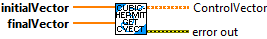
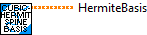

Constructs a cubic hermite spline with the specified control vectors. Each control vector contains info about the location of the point and its first derivative.
Parameters:
- xInitialControlVector - The control vector for the initial point in the x dimension.
- xFinalControlVector - The control vector for the final point in the x dimension.
- yInitialControlVector - The control vector for the initial point in the y dimension.
- yFinalControlVector - The control vector for the final point in the y dimension.
Returns:
- CubicHermitSpline - Spline data structure
- Error Out - Error data structure

Returns the control vector for each dimension as a matrix from the user-provided arrays in the constructor.
Parameters:
- initialVector - The control vector for the initial point.
- finalVector - The control vector for the final point.
Returns:
- ControlVector - The control vector matrix for a dimension.
- Error Out - The output error cluster

Returns the hermite basis matrix for cubic hermite spline interpolation.
Parameters:
- none -
Returns:
- HermiteBasis - The hermite basis matrix for cubic hermite spline interpolation.